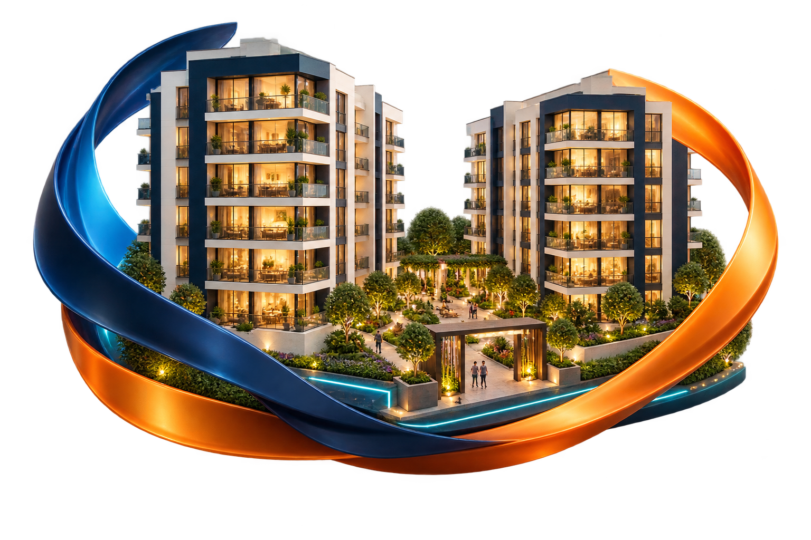

Cuentas que se entienden
Información financiera clara para que la junta de propietarios pueda supervisar la recaudación, los gastos y el uso de los recursos de su comunidad.
Más claridad para tomar decisiones.
¿POR QUÉ ADMINIO?
Una buena administración se nota en el día a día: en las cuentas claras, los espacios cuidados y la confianza de saber a quién acudir.
En ADMINIO integramos personas, procesos y tecnología para proteger el valor de tu propiedad y mejorar la vida en comunidad.

LO QUE NOS MUEVE
Cuidamos lo que compartes con tus vecinos y lo que has construido para tu futuro.
Información financiera clara para que la junta de propietarios pueda supervisar la recaudación, los gastos y el uso de los recursos de su comunidad.
Más claridad para tomar decisiones.
Coordinamos la administración, el mantenimiento y el cuidado de los espacios comunes con una gestión orientada a preservar tu inmueble.
Un edificio cuidado, todos los días.
Atendemos las necesidades de residentes y propietarios con empatía y comunicación clara. Detrás de cada solicitud hay alguien que necesita una solución.
Una comunidad que se siente acompañada.
Combinamos herramientas digitales y procesos organizados para facilitar la consulta de información y acompañar la gestión del edificio.
Información más accesible, gestión más práctica.
Promovemos una administración proactiva, con seguimiento de las necesidades del inmueble y coordinación de tareas para cuidar su funcionamiento.
Orden y continuidad en la operación.
Somos una empresa peruana especializada en administración integral de edificios y condominios. Unimos profesionales y procesos para responder a cada comunidad.
Una gestión enfocada en tu propiedad.
11 AÑOS DE EXPERIENCIA, BUENAS PRÁCTICAS EN GESTIÓN
Durante estos 11 años hemos desarrollado buenas prácticas en la administración de edificios y condominios. Esa experiencia se refleja en un modelo que integra cinco pilares especializados, con el administrador como coordinador central.
Control financiero riguroso, conciliación bancaria y recuperación efectiva de cuentas por cobrar.
Liderado por: Contador colegiado
Supervisión estricta del personal y mantenimiento técnico de equipos críticos del edificio.
Liderado por: Exmilitar + técnico electromecánico
El gran gestor coordinador
Integra y supervisa los cinco pilares para una gestión organizada y orientada a las necesidades de cada edificio.
Asesoría jurídica permanente, gestión de morosidad y cumplimiento normativo.
Liderado por: Abogado inmobiliario
Selección rigurosa, capacitación constante y bienestar del personal operativo.
Liderado por: Psicóloga
Plataforma digital para la transparencia de la gestión y la automatización inteligente de procesos.
Liderado por: Programador especialista
Cinco especialidades conectadas por una misma responsabilidad: cuidar tu edificio y a quienes viven en él.
NUESTRA ESENCIA
Creemos que una administración moderna debe ser eficiente y humana. Por eso, conectamos el control de los recursos con el cuidado de quienes viven en cada edificio.
Conoce más de ADMINIO ↗Optimizar los recursos, preservar el valor de los inmuebles y contribuir a una mejor calidad de vida para sus residentes.
Impulsar una administración inmobiliaria más inteligente, transparente y cercana en el Perú.
Transparencia para informar. Empatía para atender. Responsabilidad para actuar. Innovación para mejorar.
UNA PROPUESTA PARA TU COMUNIDAD
El punto de partida es conocer la tuya.
Comparte las características de tu inmueble y los servicios que buscas.
Conversemos sobre la operación, los recursos y las necesidades de tu comunidad.
Evaluemos el alcance de los servicios para construir una gestión alineada con tu edificio.
DEMOS EL SIGUIENTE PASO
Cuéntanos qué necesita tu comunidad y solicita una propuesta.